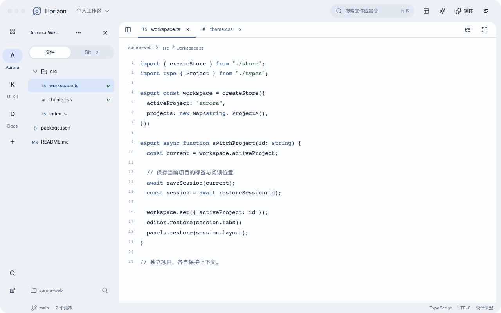
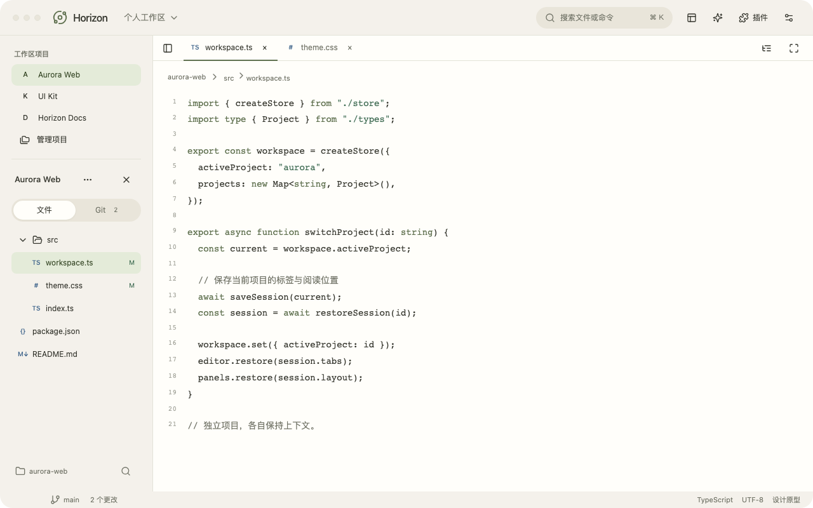
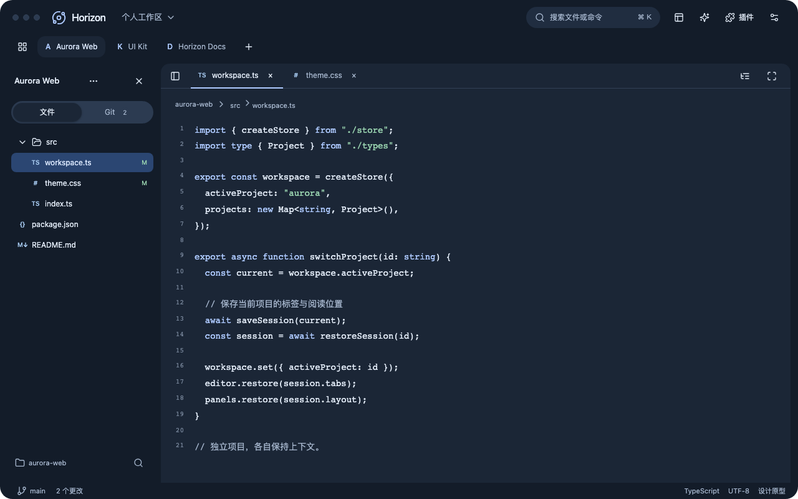
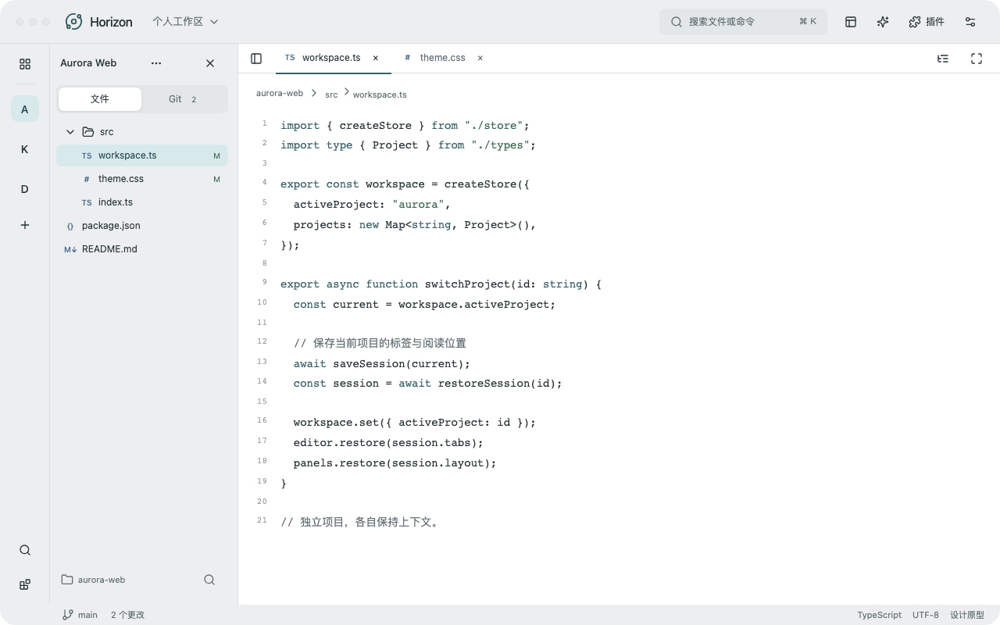
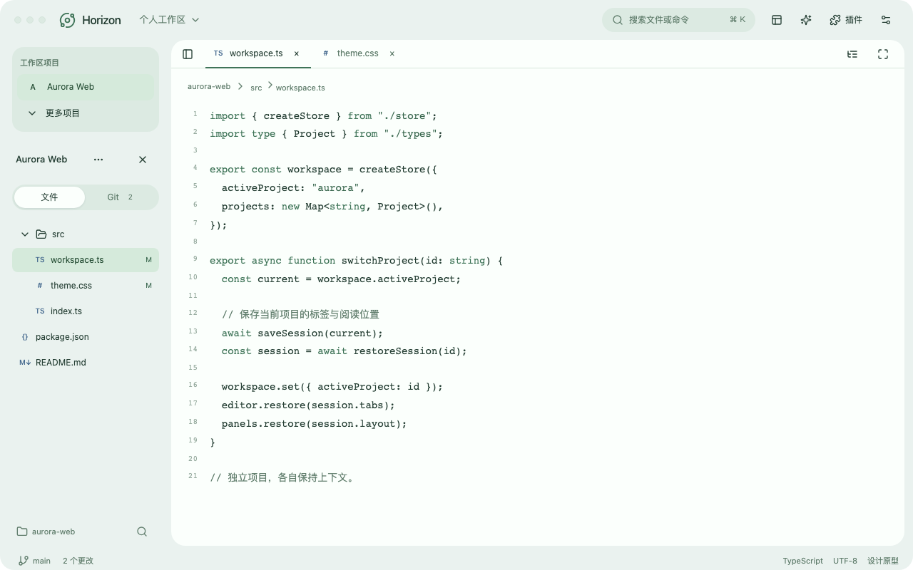
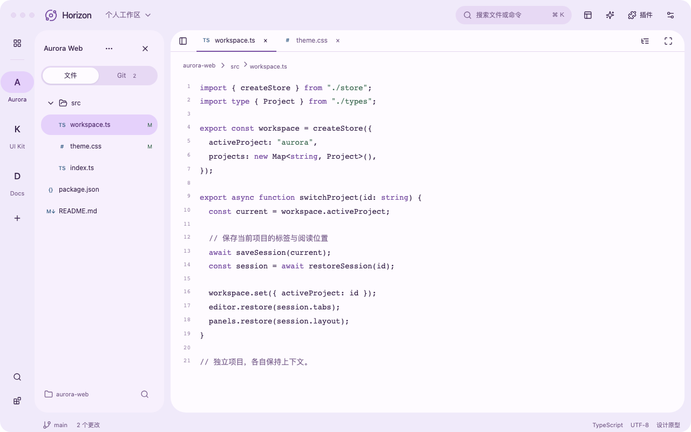
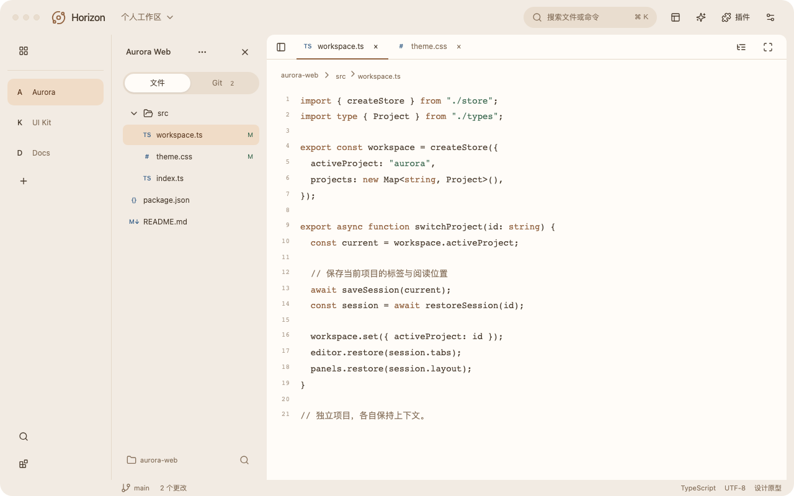
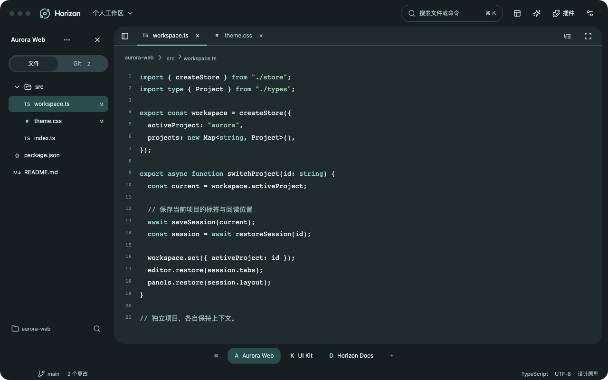

雾蓝分区工作台

蓝灰色调、独立项目栏、轻柔层次；代码区与辅助区域以留白分开。暖纸一体侧栏

暖白底色、项目与文件整合到同一侧栏；弱化边界，强调阅读连续性。深空顶部项目标签

深蓝灰表面、顶部项目标签；代码区横向展开，辅助工具通过侧面板出现。石墨紧凑工具栏

中性灰、细分隔线与小圆角；保留键盘工具的精确感，减少装饰与面板间隙。青瓷可折叠导航

浅青绿色、宽项目切换器与可折叠导航；文件和搜索使用同一片侧栏空间。鸢尾Expressive 分区

紫色调、大圆角、明显的选中形状和宽松节奏；项目导航与文件区域各自成组。砂岩展开式项目目录

低饱和暖色、显示完整名称的项目目录；多项目可读性优先，减少对缩写的记忆。极光底部项目栏

深石墨表面与青色强调；项目切换放到底部，顶部保留搜索与当前任务。